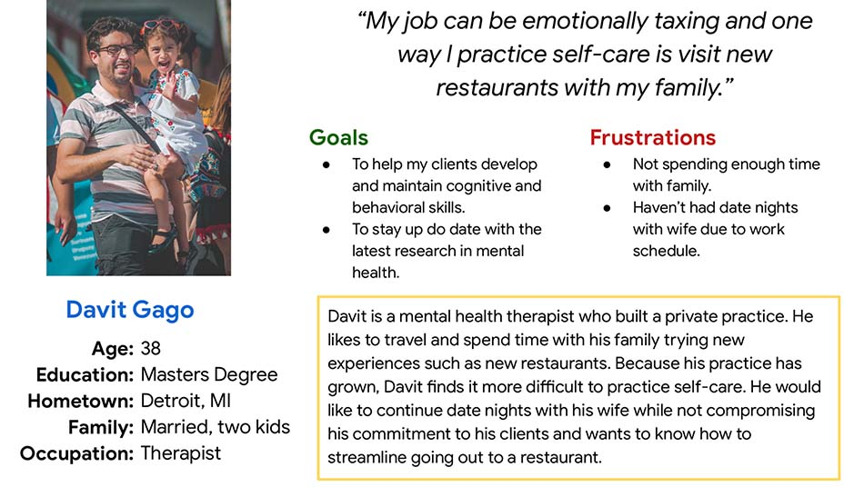
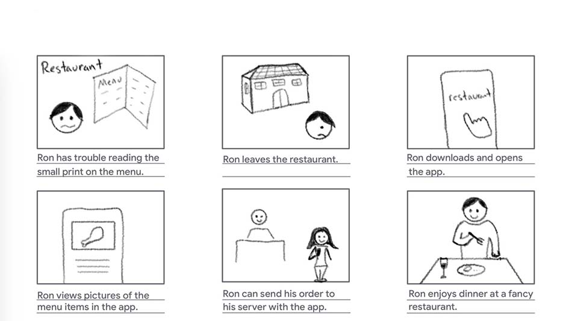

Overview
ANDERSON
Project
Under the Google UX program, I designed a user flow for a fictional restaurant called, Anderson, an upscale restaurant which specializes in modern cuisine.
Audience
The target audience was working young professionals who currently reside in the city and use their mobile phone to order meals at least once a month.
Goal
Determine if the user can select an item from the menu and place their order. The project was completed from March to April 2021.
Responsibilities
Designing an app from conception to delivery: conducting interviews, paper and digital wireframing, low and high-fidelity prototyping, conducting usability studies, accounting for accessibility, and iterating.
User Research
After conducting interviews with adults, I identified the primary user group as adults who prefer the ease and control of ordering meals on their smartphone.
This user group confirmed initial assumptions or pain points about restaurant customers. For example, users want to feel safe from contagion while dining out, so they now questioned using paper menus. Participants also reported some restaurant apps are difficult to read due to small text size, in addition to images appearing uninteresting and dull.
Persona
Problem Statement
Davit is a busy therapist who needs a safer way to view menus because he does not want to share paper menus with others during the pandemic.
Storyboards
Big Picture
Small Picture


Testing
I conducted a moderated usability study with five participants between the ages of 20 and 48. Each session lasted about 10 to 15 minutes. Using a laptop, participants were asked to test a prototype app, specifically, to select an item from the menu and complete their order. Participants were able to give feedback at the end of the study session.
Results
1. Participants had trouble finding the "plus" button.
2. Users did not understand the meaning of the plate icon.
3. Participants wanted confirmation of their order.


My goal for the mockups was to fix the user pain points while remaining consistent with the Google prompt of designing an app for a fancy restaurant.
The user feedback resulted in important design changes. To illustrate, I included the word "Add," so users can easily understand the purpose of the button. I also changed the plate icon to a bill to help the user navigate to the checkout screen. This design change, I believe, would help users understand the icon's meaning better than a plate, as a restaurant bill gives the customer their total cost. Lastly, I included a couple screens to help the user tip their server and reassured them their order was successfully placed.
To promote feelings of luxury and class, I selected a shade of gold color and paired it with a saturated blue to serve as the primary colors. I used black and gray as secondary colors to balance the subtle vibrace of the gold and blue. Lastly, for the typeface, I was inspired by the Michelin star restaurant in Del Mar, CA, called Addison. Thus, I used a similar typography choice, Rajdhani, for the restaurant's title and Sen for the body, given its modern and clean look.
It was important to make the text ligible for users as this was a primary pain point discovered in the user research. Second, showing clear and enticing images of the menu items was necessary to provide a good viewing experience. Lastly, I was mindful of using good color contrast to enhance the visibility of labels and buttons to improve nagivation of the app.
I learned about my assumptions with respect to the meaning of an icon. For example, users had trouble understanding the meaning of a plate icon to resemble payment and this caused friction in placing their order. Lastly, the logical next step would be to conduct a second usability study with the hi-fi prototype to test the design changes with a new group of users.